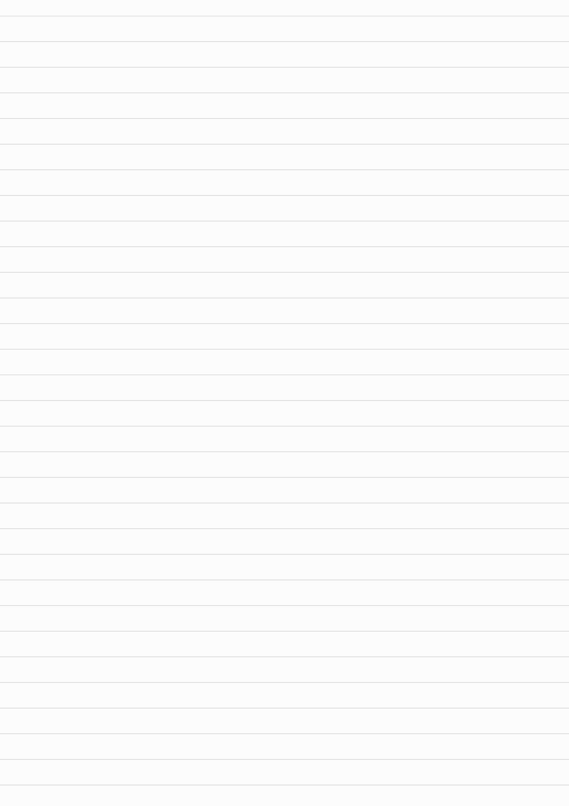
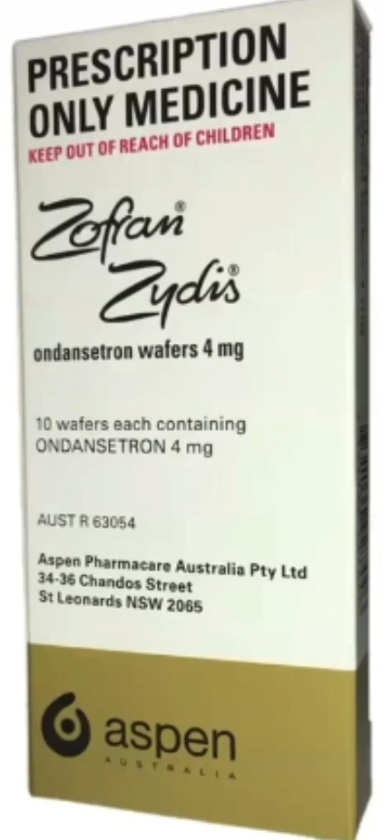
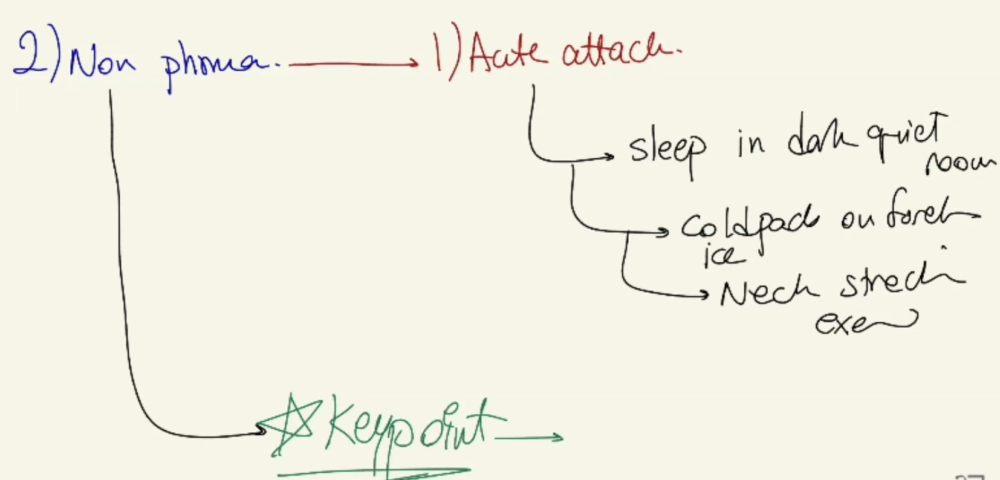

Migraine - Management and Counselling
Source: Dr. Amir workshop — Med workshop 2 - 2026 / CLASS 1 HEADACHE (Aug 2026 drop) · Specialty: neurology
Opening and Diagnosis
Counselling case: open with "How can I help you? Can you tell me what's been happening?" The patient has a 12-month worsening headache and has had an MRI, and is concerned about the result. Explore any hidden agenda. Diagnosis: migraine. Explanation: the exact cause is unknown but the headache is associated with changes in the brain's blood vessels. Reasons: unilateral throbbing pain, nausea, light sensitivity, and alcohol (wine) as a trigger; the MRI has excluded a serious cause such as a brain tumour (justified in a patient with severe recurrent headache).
Management Framework
Management is categorised into pharmacological, non-pharmacological, and patient education/support. As a GP you start treatment; migraine is managed in primary care, not routinely by a neurologist. Referral to a neurologist follows only after first- and second-line preventive drugs have failed.
Acute (Abortive) Pharmacological Ladder
- Step 1 - simple analgesia: aspirin or an NSAID (e.g. ibuprofen 400-600 mg; naproxen or diclofenac as alternatives), plus an antiemetic because migraine is usually associated with nausea and the antiemetic also improves analgesic absorption.
- Step 2 - triptans (migraine-specific), e.g. sumatriptan or rizatriptan. Forms: tablets, wafers (for nausea/fast absorption), nasal spray, and subcutaneous (for severe migraine presenting to ED). Counsel side effects (dizziness, raised blood pressure) and interactions.
Preventive (Prophylactic) Treatment
Consider prophylaxis when acute treatment is needed more than about twice per month or attacks are frequent (this patient has 8 in 12 months and is a good candidate). First-line options include a beta-blocker (propranolol), pizotifen, amitriptyline (useful if there is sleep disturbance) and candesartan (useful with coexisting hypertension). Topiramate and sodium valproate are generally specialist-initiated. Trial a first-line agent for at least 8-12 weeks before switching; refer to a neurologist if a second first-line agent also fails.
Medication-Overuse Headache
Overuse of analgesics in migraine or tension headache changes nerve sensitivity and causes more headaches. Limit simple non-opioid analgesics to fewer than 15 days per month and triptans to fewer than 10 days per month.
Non-Pharmacological Management
Acute attack: sleep in a dark, quiet room; cold pack to the forehead; neck-stretching, alongside medication. Trigger avoidance is the most important long-term measure: keep a migraine diary to identify personal triggers. Common triggers include foods (cheese, banana), drinks (alcohol, caffeine, dehydration), irregular sleep and missed meals, and stress/periods (use relaxation techniques, yoga, meditation). Limit caffeine.
Contraception - Critical Safety Point
Because migraine cases are typically women, always ask about contraception. In migraine the combined oral contraceptive should be stopped (oestrogen is the concern): migraine WITH aura is a category-4 contraindication (do not use), and migraine WITHOUT aura is category 3 for continuation and category 2 for initiation. Progestogen-only options (POP, Implanon, Mirena) and condoms are acceptable alternatives. Failing to address the COCP is scored as a critical error.
Support and Safety-Netting (4 Rs)
Refer to Migraine Australia for support groups and reading materials. 4 Rs: Referral (support group), Reading materials, Review (regularly, usually in 2-3 months), and Red flags — advise the patient to return if the headache worsens, becomes more frequent or different in character, or if neurological deficit (weakness, numbness, blurred vision, loss of weight) develops.
Case Figures










🔬 Expert Review & Enhancements
Reviewed by: history-taking-expert (Australian clinical supervisor) · fact-checked against the irStudy medical textbook RAG index.
✏️ Corrections
The drug is metoclopramide (spelling). Per Therapeutic Guidelines (eTG), metoclopramide or prochlorperazine are the preferred antiemetics/prokinetics in acute migraine (they also aid analgesic absorption); ondansetron is NOT a preferred migraine antiemetic and does not improve headache. Counsel metoclopramide's extrapyramidal/acute dystonia risk in young women and limit dose/duration.
Triptans are abortive, not preventive. Preventives (propranolol, amitriptyline, candesartan, pizotifen, topiramate) are trialled for at least 8-12 weeks each; the acute ladder (simple analgesia + antiemetic, then triptan) is separate from the preventive pathway.
The evidence-based acute aspirin dose is 900 mg (soluble) with an antiemetic. MAOIs are essentially obsolete in Australian practice; the more relevant contraindications/cautions for triptans are ischaemic heart disease, uncontrolled hypertension, cerebrovascular disease and concomitant ergot use, plus serotonin-syndrome caution with SSRIs/SNRIs.
⭐ Suggested Enhancements
🏷️ Metadata
📚 Reference Citations (RAG)
Churchills_Pocketbook_of_Differential_Diagnosis (1).pdf p.123 (p136) qdrant:deb1d62e-9e5b-4d71-8602-b1541919658e
Churchills_Pocketbook_of_Differential_Diagnosis (1).pdf p.94 (p107) qdrant:efd77015-7c3e-4212-8a60-24109fecf13b
John Murtagh General Practice, 8th Edition.pdf p.80 (p229) qdrant:c4c0c7c3-11ce-41ad-b015-a13ca14f48ba